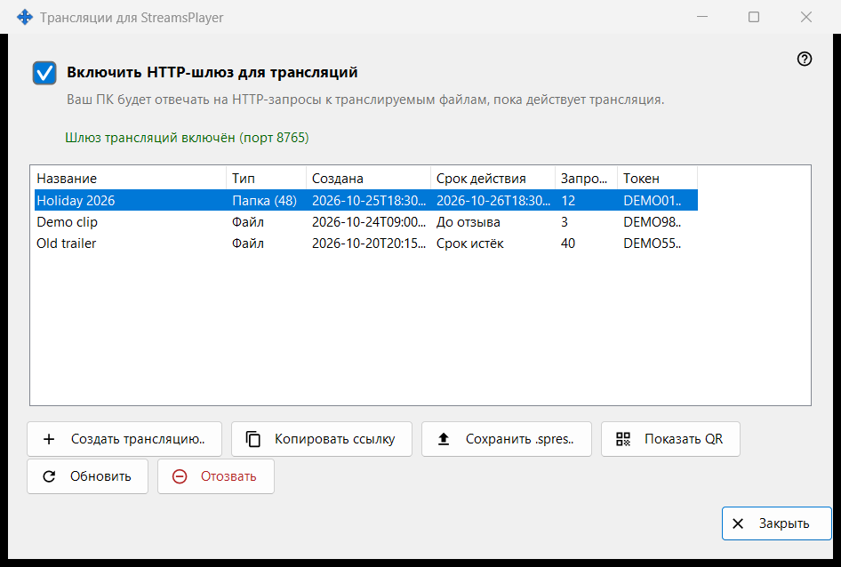
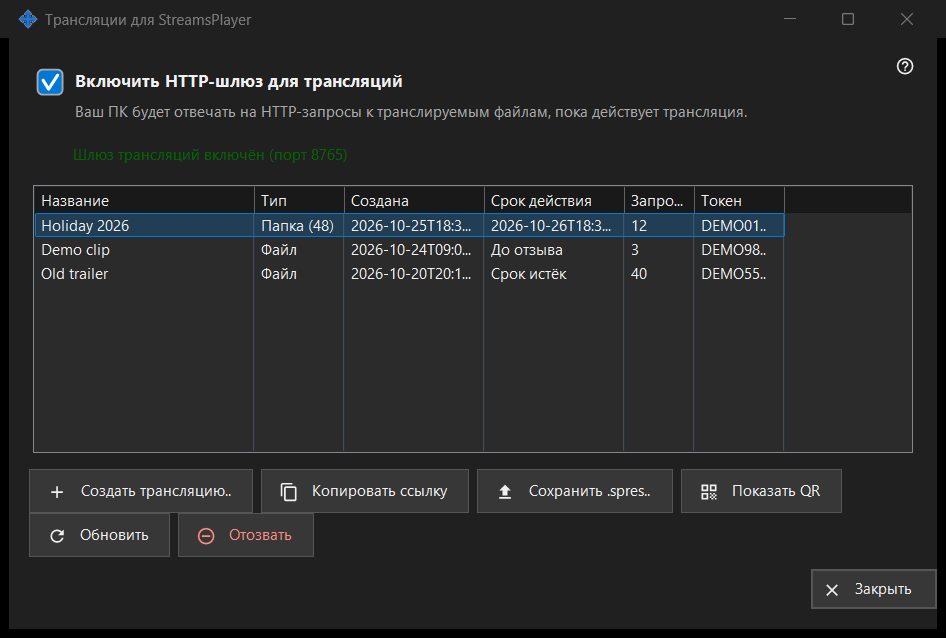

Трансляции для StreamsPlayer
Назначение
Управляет HTTP-трансляциями медиафайлов и папок, которые этот ПК предлагает приложению StreamsPlayer. Окно открывается кнопкой или пунктом меню добавления «Трансляции..» в главном окне Share Manager; они появляются только тогда, когда служба раздачи сообщает о поддержке трансляций. Запуск с путём к файлу или папке открывает окно и сразу показывает диалог «Создать трансляцию» для этого пути.


Порядок действий
- Включите «Включить HTTP-шлюз для трансляций» или просто создайте трансляцию - шлюз включится сам.
- Нажмите «Создать трансляцию..», выберите медиафайл, задайте название, срок действия и вариант «Также через интернет» и нажмите «Транслировать».
- Ссылка копируется в буфер обмена.
- Выберите строку и нажмите «Копировать ссылку», «Сохранить .spres..» или «Показать QR», чтобы передать трансляцию на устройство.
- Когда трансляция больше не нужна, нажмите «Отозвать».
Элементы окна
Переключатель шлюза
Флажок включает и выключает HTTP-шлюз. Строка под ним сообщает «Шлюз трансляций выключен» или «Шлюз трансляций включён (порт N)». Пока шлюз работает, этот ПК отвечает на HTTP-запросы к файлам трансляций. Если шлюз не запускается (порт, брандмауэр), флажок возвращается в настоящее состояние, а причина появляется в одной красной строке под ним; отказ никогда не открывает диалог.
Список трансляций
Колонки: Название, Тип (Файл или Папка с числом элементов), Создана, Срок действия (дата, «До отзыва» или «Срок истёк»), Запросов и Токен, где видны только первые шесть символов. Список обновляется сам каждые 5 секунд. Двойной щелчок по строке копирует её ссылку.
Создать трансляцию..
Запрашивает медиафайл и открывает диалог «Создать трансляцию». После подтверждения шлюз при необходимости включается, трансляция создаётся, а её ссылка копируется в буфер обмена с пометками конфиденциальности; сообщение подтверждает копирование.
Обновить и Отозвать
«Обновить» доступно только для трансляции папки и просит службу обновить её; сообщение подтверждает результат. «Отозвать» работает с любой строкой и сначала спрашивает: «Отозвать трансляцию X? Ссылка перестанет работать немедленно.» Отозванную трансляцию восстановить нельзя - создайте новую.
Когда страница отключена
Если служба раздачи не отвечает или не поддерживает трансляции, страница сама отключается на месте, а красная строка объясняет причину: например, эта версия службы трансляций устарела, либо действие не удалось выполнить и подробности записаны в журнал.
Настройки менеджера · Настройки общего доступа SFTP · Настройки сервера обмена